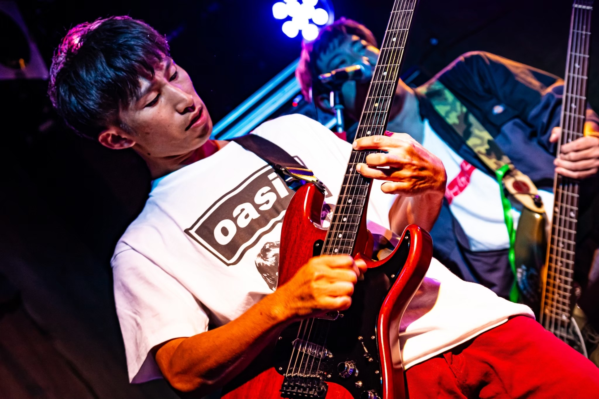
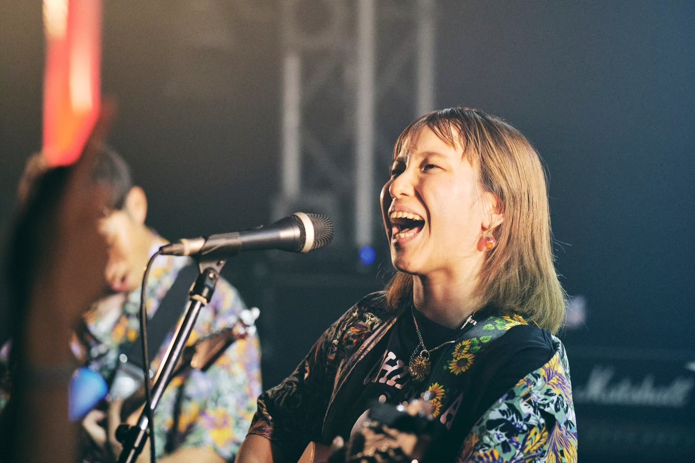
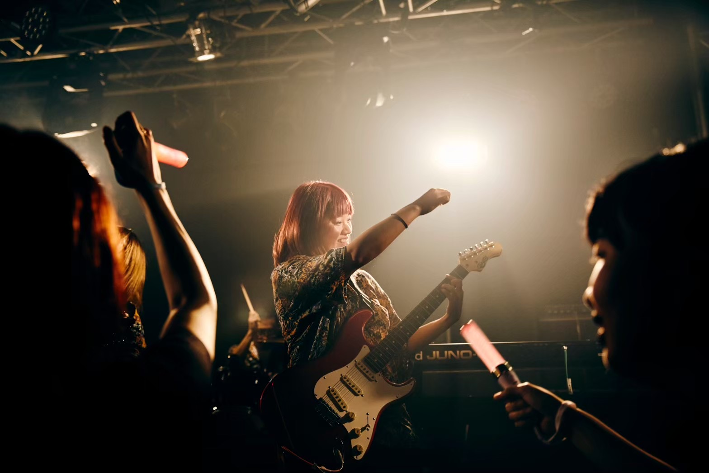
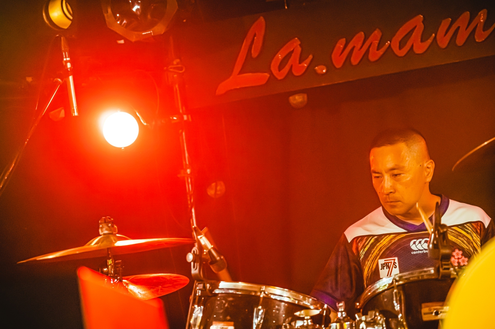
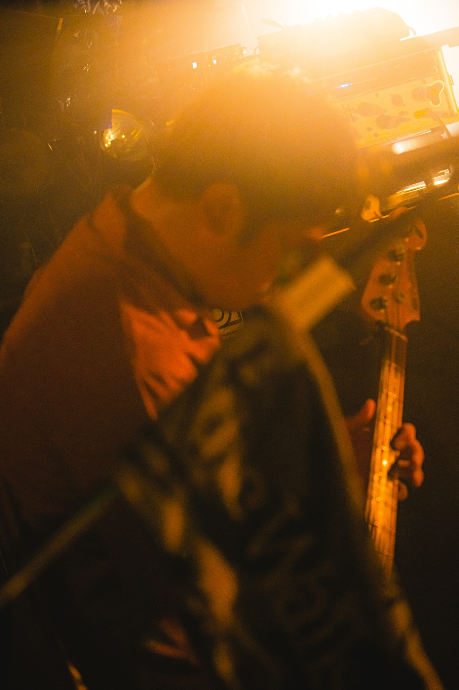

マス(Gt)

Profile
当バンドの創設者にして、頼れるリーダー！そして、どんな音色も再現する音作りの名手！
他にもオリジナルバンドや洋楽オルタナ系バンドもこなす酒豪！！
マス SNS
のん(Vo/Gt)

Profile
DWiLの絶対的センターであり、メンバー最年少ながら、落ち着いており、精神的に一番大人な面がある
人との繋がりを大切にしており、そのイベント企画を精力的に行なっている。イベントのレポート動画も必見
切り絵作家としての一面もある
さっとん(Key/cho)

Profile
影のリーダーであり、我がバンドの心臓、バンマス
鍵盤を正確に操る反面、野鳥観察や着物、日本酒の知識など、様々なジャンルも多彩にこなすバイプレーヤー
さっとん SNS
Tina(Dr)

Profile
最年長ながら、１番のフットワークの持ち主
感情豊でパワフルなドラムを叩く反面、似顔絵などをその場で仕上げてしまうストリートアーティストの側面も持つ
Tina SNS
なる(Vo/Ba)

Profile
ピック弾きにこだわるベース兼ボーカル担当
時々、フライヤーやYoutube動画を作成する